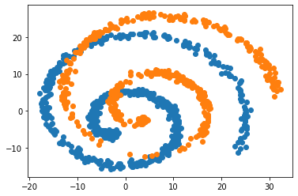

[1]:
import numpy as np
import matplotlib.pyplot as plt
from scipy.spatial.distance import cdist
from scipy.spatial.transform import Rotation
import math
from scipy.stats import norm, zscore, multivariate_normal
import transmorph as tr
import matplotlib.pyplot as plt
from mpl_toolkits.mplot3d import Axes3D
from sklearn.decomposition import PCA
[2]:
# Generating data
def generate_spiral(n, length=6.18, min_radius=1, sigma_hubs=1, sigma_jitter=1, hubs=3, sigma_translation=5):
""" Creates random spirals. Warning, method is not very robust, and sometimes produces unusable datasets."""
n_hubs = len(hubs)
t = np.zeros((n,))
pos = 0
for h in range(n_hubs):
if h < n_hubs - 1:
n_points = int(np.random.normal(n/n_hubs, np.sqrt(n/n_hubs)))
else:
n_points = n - pos
n_points = min(n - pos, n_points)
if n_points <= 0:
break
t[pos:pos+n_points] = np.random.normal(hubs[h], sigma_hubs, (n_points,))
pos += n_points
t = t[(t > 0)*(t<length)]
n = len(t)
offset = np.random.normal(0, 1)
X = np.array([t, np.cos(.5*(t+offset))*(t+min_radius), np.sin(.5*(t+offset))*(t+min_radius)]).T
X += np.random.normal(0, sigma_jitter, (n,3))
X += np.random.normal(0, sigma_translation, (3,))
return X, t
# Generate
# xs, colors_s = generate_spiral(500, length=24, sigma_hubs=1, sigma_jitter=0.5, hubs=[0, 6, 10, 12, 18, 20, 22, 24])
# yt, colors_t = generate_spiral(1000, length=24, sigma_hubs=10, sigma_jitter=0.5, hubs=list(range(24)))
# Save
# np.savetxt("datasets/xs.csv", xs, delimiter=',')
# np.savetxt("datasets/yt.csv", yt, delimiter=',')
# np.savetxt("datasets/cs.csv", colors_s, delimiter=',')
# np.savetxt("datasets/ct.csv", colors_t, delimiter=',')
# Load
xs = np.loadtxt("datasets/xs.csv", delimiter=',')
yt = np.loadtxt("datasets/yt.csv", delimiter=',')
colors_s = np.loadtxt("datasets/cs.csv", delimiter=',')
colors_t = np.loadtxt("datasets/ct.csv", delimiter=',')
pca = PCA(n_components=2)
yt_pca = pca.fit_transform(yt)
xs_pca = pca.transform(xs)
plt.scatter(yt_pca[:,0], yt_pca[:,1])
plt.scatter(xs_pca[:,0], xs_pca[:,1])
[2]:
<matplotlib.collections.PathCollection at 0x7feb974b3c10>

Optimal transport¶
[3]:
w_weighted = tr.Transmorph(method='ot', scale=1e-1)
w_unweighted = tr.Transmorph(method='ot', weighted=False)
xt_unweighted = w_unweighted.fit_transform(xs, yt) # Equal weights
xt_weighted = w_weighted.fit_transform(xs, yt) # Density correction
xt_pca = pca.transform(xt_weighted)
xt_nd_pca = pca.transform(xt_unweighted)
---------------------------------------------------------------------------
TypingError Traceback (most recent call last)
/tmp/ipykernel_17532/2485815428.py in <module>
1 w_weighted = tr.Transmorph(method='ot', scale=1e-1)
2 w_unweighted = tr.Transmorph(method='ot', weighted=False)
----> 3 xt_unweighted = w_unweighted.fit_transform(xs, yt) # Equal weights
4 xt_weighted = w_weighted.fit_transform(xs, yt) # Density correction
5 xt_pca = pca.transform(xt_weighted)
~/Documents/PHD/transmorph/transmorph/src/transmorph/transmorph.py in fit_transform(self, xs, yt, xs_labels, yt_labels, Mx, My, Mxy, jitter, jitter_std)
456 My=My,
457 Mxy=Mxy)
--> 458 return self.transform(xs,
459 jitter=jitter,
460 jitter_std=jitter_std)
~/Documents/PHD/transmorph/transmorph/src/transmorph/transmorph.py in transform(self, xs, jitter, jitter_std)
429 assert self.fitted, "Transmorph must be fitted first."
430 self._log("Projecting dataset...")
--> 431 xt = transform(self.transports[0],
432 jitter=jitter,
433 jitter_std=jitter_std)
~/.local/share/virtualenvs/transmorph-XhEokvZw/lib/python3.9/site-packages/numba/core/dispatcher.py in _compile_for_args(self, *args, **kws)
418 e.patch_message(msg)
419
--> 420 error_rewrite(e, 'typing')
421 except errors.UnsupportedError as e:
422 # Something unsupported is present in the user code, add help info
~/.local/share/virtualenvs/transmorph-XhEokvZw/lib/python3.9/site-packages/numba/core/dispatcher.py in error_rewrite(e, issue_type)
359 raise e
360 else:
--> 361 raise e.with_traceback(None)
362
363 argtypes = []
TypingError: Failed in nopython mode pipeline (step: nopython frontend)
non-precise type pyobject
During: typing of argument at /home/risitop/Documents/PHD/transmorph/transmorph/src/transmorph/integration.py (29)
File "../src/transmorph/integration.py", line 29:
def transform(
<source elided>
"""
tdata_x, tdata_y, Pxy = transport
^
This error may have been caused by the following argument(s):
- argument 0: Cannot determine Numba type of <class 'transmorph.transmorph.Transport'>
[4]:
# Optimal transport
plt.style.use('default')
plt.figure(figsize=(27,8))
plt.subplot(1,3,1)
plt.scatter(*yt_pca.T, s=60, c='silver', label='Spiral B')
plt.scatter(*xs_pca.T, s=60, c=colors_s, cmap='viridis', ec='k', label='Spiral A', marker='s')
plt.xlabel("PC1", fontsize=20)
plt.ylabel("PC2", fontsize=20)
plt.xticks([])
plt.yticks([])
plt.legend(fontsize=15)
plt.title('Raw datasets', fontsize=20)
plt.subplot(1,3,2)
plt.scatter(*yt_pca.T, s=60, c='silver', label='Spiral B')
plt.scatter(*xt_nd_pca.T, s=60, c=colors_s, cmap='viridis', ec='k', label='Spiral A', marker='s')
plt.xlabel("PC1", fontsize=20)
plt.ylabel("PC2", fontsize=20)
plt.xticks([])
plt.yticks([])
plt.legend(fontsize=15)
plt.title('OT-integration', fontsize=20)
plt.subplot(1,3,3)
plt.scatter(*yt_pca.T, s=60, c='silver', label='Spiral B')
plt.scatter(*xt_pca.T, s=60, c=colors_s, cmap='viridis', ec='k', label='Spiral A', marker='s')
plt.xlabel("PC1", fontsize=20)
plt.ylabel("PC2", fontsize=20)
plt.xticks([])
plt.yticks([])
plt.legend(fontsize=15)
plt.title('OT-integration,\ncorrected weights', fontsize=20)
pass

[ ]: